Instagram App Redesign.
A personal project redesigning 11 key screens, focused on navigation and content discovery.

What I changed
Restructured the layout and navigation across 11 key screens. Improved visual hierarchy and consistency. Refined interaction patterns and screen flow to make content discovery more intuitive. Simplified navigation and streamlined key actions.
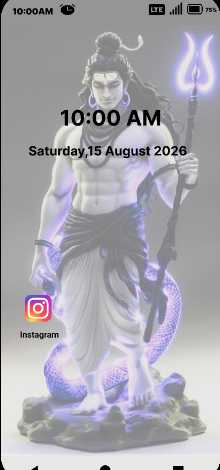
01. App Launch & Homescreen: Modern minimal icon design and quick launcher presentation.
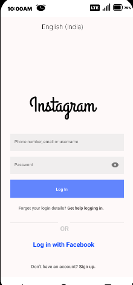
02. Login Page: Clean, distraction-free onboarding with streamlined credential input and account switching.
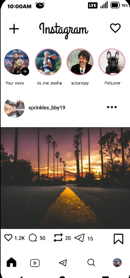
03. Homepage (Feed): Refined story rings, streamlined post typography, and enhanced engagement bar with direct metrics.
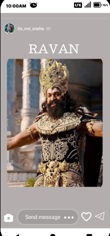
04. Fullscreen Stories: Edge-to-edge story presentation with unified reply input pill, reaction heart, and direct message share.
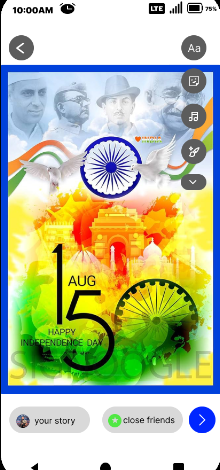
05. Story Creator & Editing Tools: Creative canvas with quick stickers, typography styles, filters, and immediate audience sharing controls.
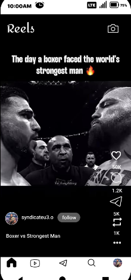
06. Reels Player (Main View): Immersive video playback with integrated sidebar actions, creator follow toggle, and direct repost indicators.
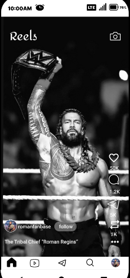
07. Reels Player (Alternate Feed): Seamless vertical transition with high-contrast media rendering, caption hierarchy, and persistent bottom navigation.
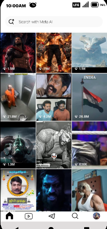
08. Search Page (Explore): Integrated smart search bar with categorized 3-column discovery media grid.
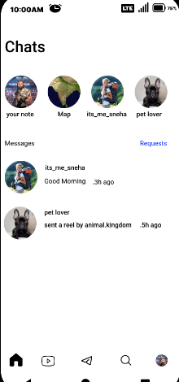
09. Direct Messages (Chats) & Notes: Quick-status notes tray, requests filter, and active conversation thread listing.
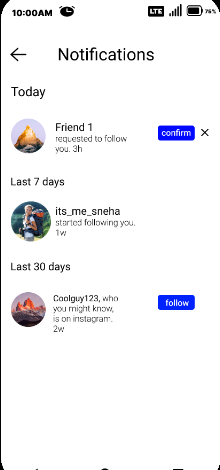
10. Activity & Notifications Hub: Segmented timeline (Today, Last 7 days, Last 30 days) with inline confirmation actions.
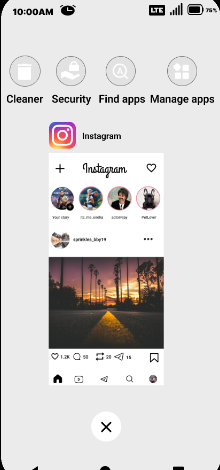
11. Multi-Tasking & App State: Seamless card transition and app management view.